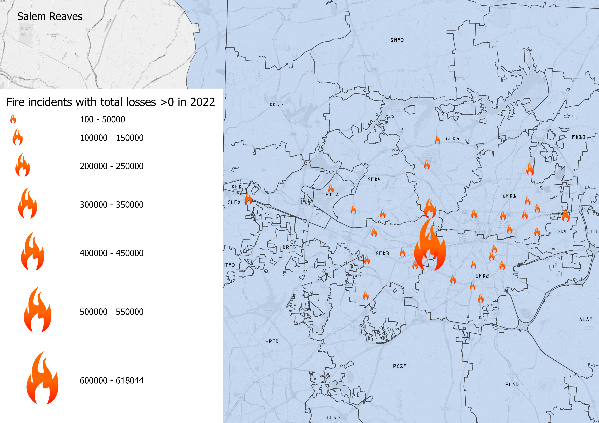

I chose this topic because the use of proportional symbols could be effective in representing average severity and locations of outlying events.
The CSV source contained geographic data, so I incorporated a polygon layer breaking down the fire districts, but there wasn't sufficient data to join the tables. I cleaned the CSV by selecting only events from 2022 (CSV contained data from 2010-2023) and only events containing total losses >$0.
